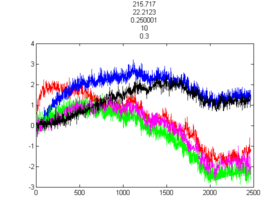
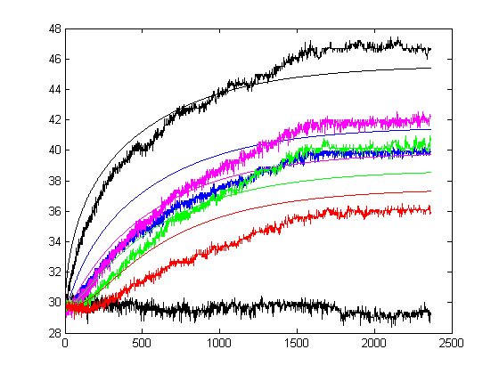

Contents
[F, T] = transientFinDiffFuncNonLin(x, readings, tOffset, reading1, readingF, offsets2, amb1, Pin, eq, iceEnd);

Calculate chi^2.
chi = sum(sum(F.^2))
chi =
2.4565e+04
Calculate chi^2 per degree of freedom. Since we have so many points we ignore the number of parameter values.
chiPer = chi/(readingF-reading1)
chiPer =
9.9614
Calculate approximate uncertainty of each measurement.
uncertainty = sqrt(chiPer)
uncertainty =
3.1562
Parameters of this fit: [k kcInner epsInner kcOuter epsOuter]
x
x =
215.7170 22.2123 0.2500 10.0000 0.3000
colors = 'kkbmgrk';
sensorPos = [1 6 9 12 19];
factors = [1.79 1.81 1.53 1.46 2.06 2];
offsets = [4.14 2.25 0.16 3.64 -0.35 0];
if(amb1)
factors = [2 factors(1:5)];
offsets = [0 offsets(1:5)];
end
figure(2);
hold off
for i=1:6
plot(squeeze(readings(3, i, :)), (squeeze(readings(1, i, :)) - offsets(i)) / factors(i) - offsets2(i), colors(i+1-amb1))
hold on
if(i < 6); plot((1:length(T(:, i)))+tOffset, T(:, sensorPos(i)), colors(i+1)); end;
end
hold off;
